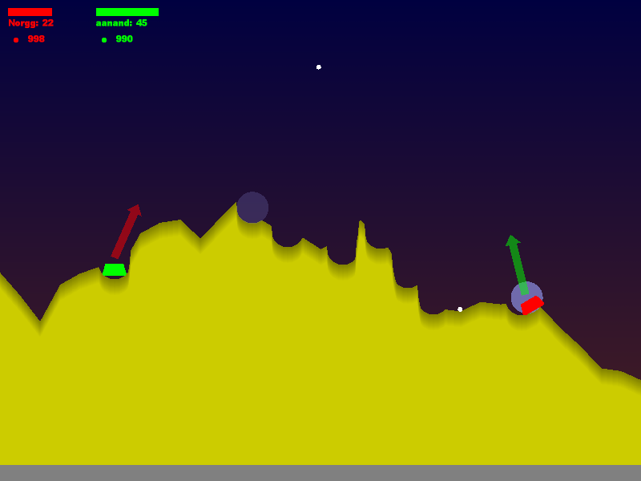

God damn! Look at this! We've implemented, like, an amount of that classic Sega Saturn easter egg, Death Tank Zwei, in an online-multiplayer capacity!

Click here to play it right the hell now!
A moves left.
D moves right.
Left and right arrows aim.
Up and down arrows control gun power.
Space fires.
Tab changes weapon.
Arrow keys and Enter control the menus.
T is for chat.
We started work on this a few weeks before it was reported that a game called Death Tank appears to be coming to Xbox Live Arcade. If indeed this is the Death Tank of old times, then while that's great (the whole reason we started this thing is so we could play Death Tank online) it's admittedly somewhat dispiriting - damn them! We were doing that!
However, we can think of several reasons this is still worth people's time:
Puts it all in perspective, right? You definitely want to be seen playing the Death Tank clone written by the cool people.
First things first: Obviously, we're not going to call it Death Tank. That would be rude, and possibly illegal. So, if you can think of a brilliant name that is at least as stupid and at least as pithy, help us out! Here are some we have considered:
It's not even nearly finished yet. There are hardly any of the weapons in there, and hardly any sounds either. So we've got some way to go. That's fine. We will DEFINITELY NOT give up on it, yet.
Pretty soon we'll put the source code up somewhere, probably on Github. Then, if you are as cool as we are, you can start hacking around with it.
In IRC, that is. Right here.
By the way, we're this person and this person.